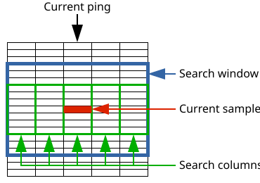

The search window and search columns are centered around the current sample as illustrated in the following figure:

If the heights are specified as duration or distance, then the corresponding number of samples is calculated for each ping.
A sample is considered a spike if two criteria hold:
The current search column is sufficiently stronger than the neighbouring search columns, i.e.,
Neighbouring search column median > Current search column median - Vertical delta
is true for at most one neighbouring search column.
The current sample is sufficiently stronger than the search window, i.e.,
Current sample value > search window median + Total delta
If the current sample is considered a spike, then its value is replaced by search window median.
Parameters
Active:
If the module is not active, then all datagrams pass unaltered through it.
Logarithmic values:
Use log(sv) or sv.
Show details:
Shows more detailed settings (Only last, Channels to process, Automatic depth range, Start depth, End depth).
Only last:
When true, only last channel is processed, if false all channels are processed.
Channels to process:
Process the n last channels (-1 for all channels).
Automatic depth range:
If true and Bottom detection module is used, then the range goes to the detected seabed,
if true and Bottom detection module is not used, the range goes to max depth of the ping.
Start depth:
Start depth in meter for filter.
End depth:
End depth in meter for filter.
Total delta:
Minimum difference of current sample to search window median to be a spike candidate.
Vertical delta:
Minimum difference of vertical median to (most) neighbouring pings to be a spike candidate.
Debug:
Replace spikes by 0 instead of median.
Vertical unit:
The unit for specifying the height of the search window and the search column.
Vertical median search height:
Half the height of the search column in number of samples.
Window median search height:
Half the height of the search window in number of samples.
Vertical median search duration:
Half the height of the search column in milliseconds.
Window median search duration:
Half the height of the search window in milliseconds.
Vertical median search distance:
Half the height of the search column in meters.
Window median search distance:
Half the height of the search window in meters.